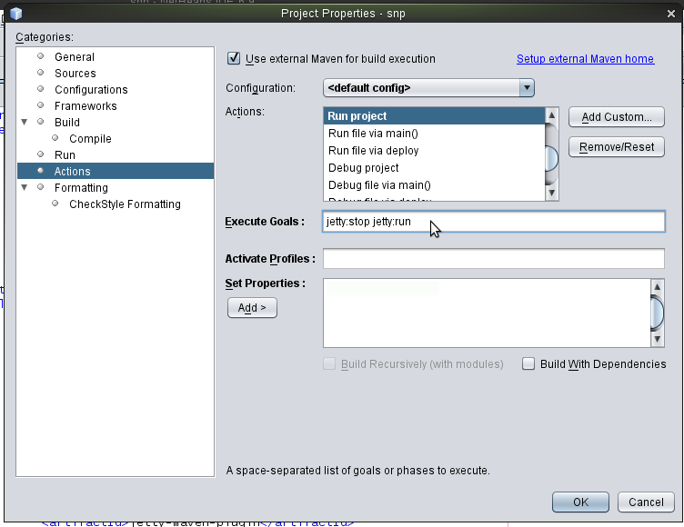

Debugando com Maven Jetty Plugin no Netbeans
by Gilberto C. Andrade on 13 maio 2011
Tagged as: Apache-Click, Apache-Wicket, Apache-Maven, NetBeans,
Jetty é um servidor web excelente. É rápido para iniciar o que o torna muito útil durante o desenvolvimento. A ferramente de construção Maven possui um plugin Jetty que podemos usar em nossos projetos de aplicação Web que utilizam Maven. Desta forma, podemos usar o Jetty para testar nossos arquivos HTML/JSP/JSF/Wicket/Click/etc. Podemos editar o arquivo JSP/HTML e atualizar nosso navegador para ver o resultado imediatamente. Podemos até mesmo compilar um arquivo de classe Java e o servidor Jetty irá reiniciar para que possamos testar o resultado no nosso navegador. Vejamos como configurar o Jetty, utilizando como IDE o Netbeans 6.9 (deve funcionar para outras versões também!), para executar e principalmente para depurar (Debugging) a aplicação:
Requisito: ser uma aplicação web gerenciada pelo Maven.
-
Primeiro vamos habilitar a função Compilar ao Salvar (Compile On Save) em nosso projeto. Esta função vem habilitada somente para execução de testes em projetos gerenciados pelo Apache-Maven, aqui estamos ajustando para execução do fonte também:

-
Adicione o plugin jetty para o maven;
<plugin> <groupId>org.mortbay.jetty</groupId> <artifactId>jetty-maven-plugin</artifactId> <version>7.0.1.v20091125</version> <configuration> <!--reload>manual</reload--> <scanIntervalSeconds>10</scanIntervalSeconds> <stopKey>foo</stopKey> <stopPort>9966</stopPort> </configuration> </plugin> -
Abra a janela de propriedades do projeto Maven e selecione Ações(Actions) da lista de categorias (Categories). Encontre a ação Executar (Run) e altere o valor do campo Metas de Execução (Execute Goals) para jetty:stop jetty:run :

-
Então, faça o mesmo para ação Depurar Projeto(Debug project) e adicione as seguintes propriedades:
jpda.listen=maven netbeans.deploy.debugmode=true
O legal é poder depurar a aplicação web.
Pronto!! 
Referências: